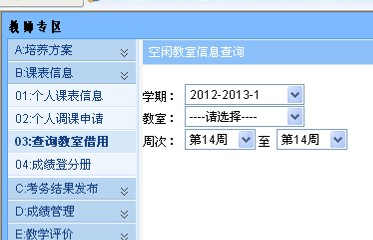
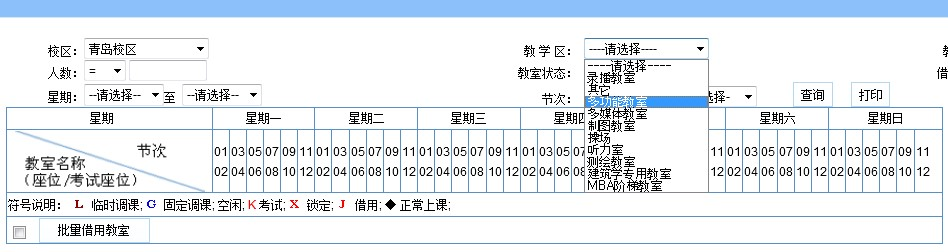
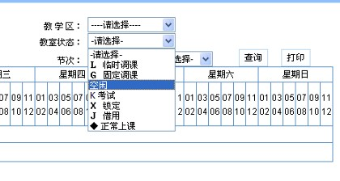
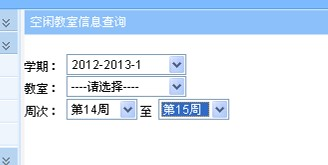
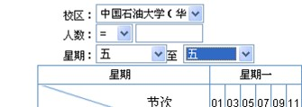
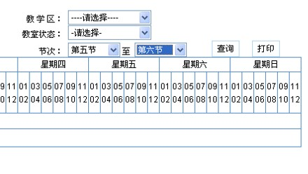
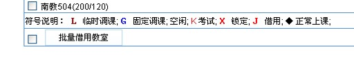
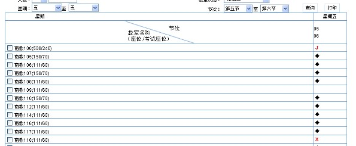
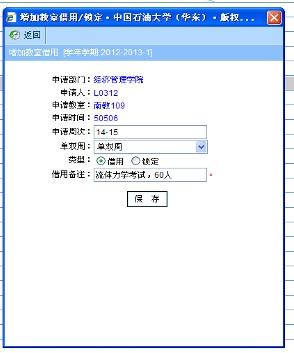

教室借用流程
进入教务系统后，点击【教师专区】-【教务运行】
点击【03：查询教室借用】
点击【教学区】，日常上课、考试选择“多功能教室”；上机选择“多媒体教室”；制图选择“制图教室”。
【教学楼】可以不选，将查询所有教学楼。
【教室】可以不选。
【人数】一般情况不需要选择。
点击【教室状态】，选择“空闲”
点击【周次】，选择借用教室的周次（例如：14-15周）
点击【星期】，选择星期（例如：星期五）
点击【节次】，选择节次（例如：第五节至第六节）
点击【查询】，将出现空闲教室列表。注意：南教109（111/60）括号中的数字表示南教109教室的上课座位数111个，考试容纳人数60人。请根据实际需求选择！
注意教室列表下方有课表安排的符号说明，借用时，只能借用如上图所示南教109没有任何符号的教室。
双击教室右侧的空白区
弹出对话框，填写借用备注，主要是借用事由、人数。如：流体力学考试，60人，点击保存即可！请务必认真填写，特别是考试借用教室的考试人数，否则审核不通过！
关于教室借用，请各位老师注意：










① 因考试、补课等借用教室，为避免教室冲突，请务必于借用后，依次点击【教师专区】→【教务运行】→【教室借用记录】，查询教室借用情况，确认是否借用成功。若状态为“审核不通过”，请查看原因。
② 上午或下午的考试，请借用1-4节或5-8节，以免考试前后该教室有课，影响考场秩序。
③ 如需使用多媒体设备，请至少提前一天借用教室，否则将无法用校园卡打开教学柜，给您造成不便。
④ 当天借用、当天使用的教室，如需使用多媒体设备，请到教务科开教室借用通知单。
⑤ 借用南教100、南教300、多媒体机房时，因其教室管理的特殊性，请到教务科开教室借用通知单。
⑥ 禁止教师、辅导员将账号交由学生使用。禁止辅导员以班会为由借用教室组织学生集体自习。
⑦ 禁止借用教室举行娱乐或商业活动。
感谢您的理解与支持！ 如有问题，请向教务科咨询，电话86981302。